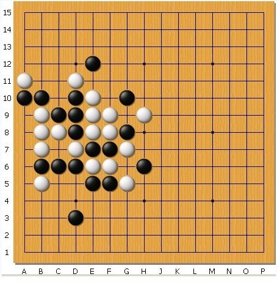

【无禁】黑先如何胜
#1 【无禁】黑先如何胜 作者：蓝天蓝 发表时间：2011-7-23 15:03:54
黑先如何胜

［此帖子已被 小红眼镜 在 2013-9-23 11:59:01 编辑过］
#2 Re:黑先如何胜 作者：花落无痕 发表时间：2011-7-23 15:10:24
G3 F4 E3............................［此帖子已被 花落无痕 在 2011-7-23 15:14:32 编辑过］
［ 蓝天蓝 于 2011-7-24 18:16:53 时花20金币送鲜花一朵］
［ 蓝天蓝 于 2011-7-24 18:17:10 时花20金币送鲜花一朵］
#3 Re:黑先如何胜 作者：花落无痕 发表时间：2011-7-23 20:06:40
楼主，我的回答是错误的吗
#4 Re:黑先如何胜 作者：蓝天蓝 发表时间：2011-7-23 22:14:57
前3步都对了。［此帖子已被 被感动的人 在 2011-7-24 8:59:16 编辑过］
#5 Re:黑先如何胜 作者：花落无痕 发表时间：2011-7-23 22:19:22
黑先G3、白F4，然后黑再E3，这样杀不掉吗？#6 Re:Re:黑先如何胜 作者：小小亦默 发表时间：2011-7-23 23:06:00
引用：G3 F4 Ｅ３ 正确的
原文由 花落无痕 发表于 2011-7-23 15:10:24 :
G3 F4 E3............................［此帖子已被 花落无痕 在 2011-7-23 15:14:32 编辑过］

#7 Re:Re:黑先如何胜 作者：蓝天蓝 发表时间：2011-7-24 9:01:35
引用：可以杀掉，昨天写错了，自己都不知道，本来是想写：前3步都对，结果写错了都没有发觉
原文由 花落无痕 发表于 2011-7-23 22:19:22 :
黑先G3、白F4，然后黑再E3，这样杀不掉吗？

#8 Re:Re:黑先如何胜 作者：小小亦默 发表时间：2011-7-24 10:02:48
引用：哈哈哈哈，是我看错了
原文由 蓝天蓝 发表于 2011-7-23 22:14:57 :
前3步都对了。［此帖子已被 被感动的人 在 2011-7-24 8:59:16 编辑过］
#9 Re:黑先如何胜 作者：花落无痕 发表时间：2011-7-24 10:18:05
既然前三步都对了，那就是说可以杀掉的喽 那既然可以杀掉，那么楼主是不是该........
听说回答问题正确的时候，会被奖励威望
（开玩笑的，别当真。我和你们又不熟，凭什么要求威望呀）
［此帖子已被 花落无痕 在 2011-7-24 10:34:21 编辑过］
［ 岑小鱼 于 2011-7-24 16:55:31 时花20金币送鲜花一朵］
［ 蓝天蓝 于 2011-7-24 18:19:09 时花20金币送鲜花一朵］
［ 蓝天蓝 于 2011-7-24 18:19:16 时花20金币送鲜花一朵］
［ 非黑既白 于 2011-7-24 21:04:31 时花20金币送鲜花一朵］
#10 Re:Re:黑先如何胜 作者：蓝天蓝 发表时间：2011-7-24 18:20:27
引用：
原文由 花落无痕 发表于 2011-7-24 10:18:05 :既然前三步都对了，那就是说可以杀掉的喽
听说回答问题正确的时候，会被奖励威望
（开玩笑的，别当真。我和你们又不熟，凭什么要求威望呀）
［此帖子已被 花落无痕 在 2011-7-24 10:34:21 编辑过］
［ 岑小鱼 于 2011-7-24 16:55:31 时花20金币送鲜花一朵］
［ 蓝天蓝 于 2011-7-24 18:19:09 时花20金币送鲜花一朵］
［ 蓝天蓝 于 2011-7-24 18:19:16 时花20金币送鲜花一朵］
给威望跟熟不熟没有关系，不过好像没有这个说法吧，奖励鲜花倒是可以
#11 Re:Re:Re:黑先如何胜 作者：花落无痕 发表时间：2011-7-24 20:38:14
引用：
原文由 蓝天蓝 发表于 2011-7-24 18:20:27 :
给威望跟熟不熟没有关系，不过好像没有这个说法吧，奖励鲜花倒是可以
论坛中有几篇关于威望的帖子，里面有大师和高手曾言‘发表有价值的文章、回答问题、参加活动，都是获得威望的途径’
事实上有些人也的确因此获得了威望
#12 Re:Re:Re:Re:黑先如何胜 作者：蓝天蓝 发表时间：2011-7-25 19:15:26
引用：答这样的题目给威望的很少吧，奖励鲜花的多
原文由 花落无痕 发表于 2011-7-24 20:38:14 :引用：
原文由 蓝天蓝 发表于 2011-7-24 18:20:27 :
给威望跟熟不熟没有关系，不过好像没有这个说法吧，奖励鲜花倒是可以论坛中有几篇关于威望的帖子，里面有大师和高手曾言‘发表有价值的文章、回答问题、参加活动，都是获得威望的途径’
事实上有些人也的确因此获得了威望